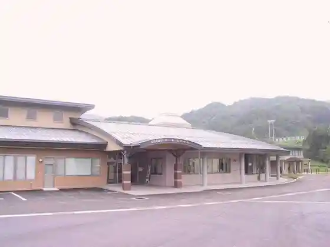
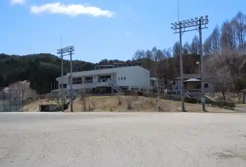
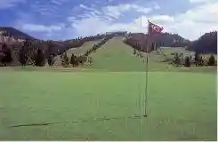

Nanshin Shu Koiki Park Hoshi no Mori Oto Campground
Urugi, Nagano · 050-3142-1518 · Official / source link
Yamanami Plaza
Urugi, Nagano · 0260-28-2311 · Official / source link
Urugi Bunka Koryu Center Buna no Ki
Urugi, Nagano · 0260-28-2677 · Official / source link

Urugi Tami Gu Land
Urugi, Nagano · 0260-28-2316 · Official / source link

Chausuyama Gorufu Kurabu
Urugi, Nagano · 0260-28-2500 · Official / source link

Buna no Mine Gorufu Kurabu
Urugi, Nagano · 0260-28-2511 · Official / source link
Urugi Kawa, Ken Kawa
Urugi, Nagano · 0260-23-0327 · Official / source link
Rentasaikuru (Dendo Ashisuto Tsuki)
Urugi, Nagano · 0260-28-2311 · Official / source link
Tsumikusa no Sato Urugi
Urugi, Nagano · 0260-28-1051 · Official / source link
Urugi Yama Village Ryugaku Center
Urugi, Nagano · Official / source link